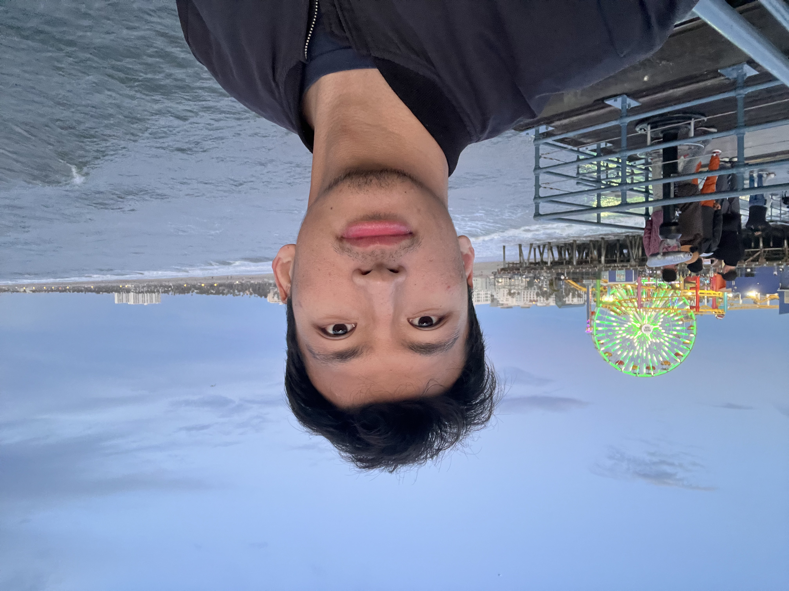

Ke Zhang (张轲)
PhD Student in Mathematics • University of California, Riverside
My research develops and evaluates tool-augmented AI agents for formal mathematics, scientific simulation, and mathematical optimization.
Selected Research
-
ToolGate: An Executable Acceptance Pipeline for Tool-Dependent Scientific Benchmark Construction [arXiv]
Ke Zhang, Yankang Liu, Roya Zandi, Maziar Raissi.
ToolGate is an executable acceptance pipeline for LLM-generated scientific benchmark questions that require specialist software. It verifies proposed answers by execution, filters out questions solvable without tools, and confirms that a tool-using agent can solve the remainder; applied to FEniCSx, it produces 128 unique protocol survivors from 500 generation attempts.
-
Beyond Compilation: Evaluating Faithful Natural-Language-to-Lean Statement Formalization [arXiv]
Ke Zhang, Patricio Gallardo, Sudhir Murthy, Yi Xie, Zhi Wang, Maziar Raissi.
We measure the gap between Lean compilation and semantic faithfulness in open-ended, graduate-level statement autoformalization without canonical Lean references. On a 400-statement benchmark, we show that compile rate can substantially overstate formalization quality. A controlled factorial study then separates how expert drafting, Mathlib search, and Lean feedback affect validity and faithfulness.
Previous work: Agentic Lean Autoformalization (ALA) v1 NeurIPS 2025 LLM Evaluation Workshop.
Patricio Gallardo, Maziar Raissi, Ke Zhang, Sudhir Murthy.
This earlier work led to our study of semantic faithfulness beyond compilation.
-
PHREEQC-MCQ-200: A Diagnostic Benchmark for Tool-Augmented Scientific Simulator Agents [arXiv] [Poster]
Ke Zhang, Sahchit Chundur, Mohammad Javad Abdolhosseini Qomi, Maziar Raissi.
PHREEQC-MCQ-200 is a diagnostic benchmark for tool-augmented agents using a deterministic scientific simulator. Beyond aggregate accuracy, we measure retention—whether tool use preserves answers a model already gets right—and show that overall gains can coexist with item-level regressions. We also compare raw-output access with a metadata-guided TOC interface, finding that the effectiveness of output access depends on model capability.
-
Learning Parameterized Nonlinear Elasticity on Curved Surfaces [arXiv]
Yankang Liu, Ke Zhang, Maziar Raissi, Roya Zandi.
AI&PDE Workshop @ ICLR 2026 — Poster.
A parameter-conditioned physics-informed neural network that represents a continuous
family of nonlinear elastic equilibria on curved manifolds from a single trained model.
I led the training pipeline and ablation studies.
-
Agentic Repair of Gurobi Optimization Models via Tool Use: A Fractional-Factorial
Study of Knowledge, Diagnostics, and Execution [Project page]
Ke Zhang, Maziar Raissi.
AAAI 2025 Workshop (AI4Research) — Accepted.
Benchmark of 26 Gurobi problems with 260 unit tests, an LLM-based bug generator,
and a RAG-grounded repair agent over the Gurobi Python API, analyzed via
fractional factorial design.
About Me
Outside research, I climb mountains — Mt. Siguniang Erfeng (5,276 m / 17,309 ft)
in Sichuan, and Mt. San Jacinto via Devil's Slide Trail (16 mi) — and I do my own
car maintenance, down to the oil, brake pads, and rotors.
Contact
Email: kzhan153@ucr.edu